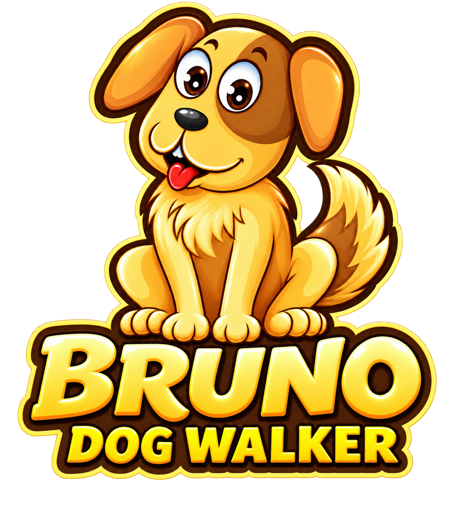
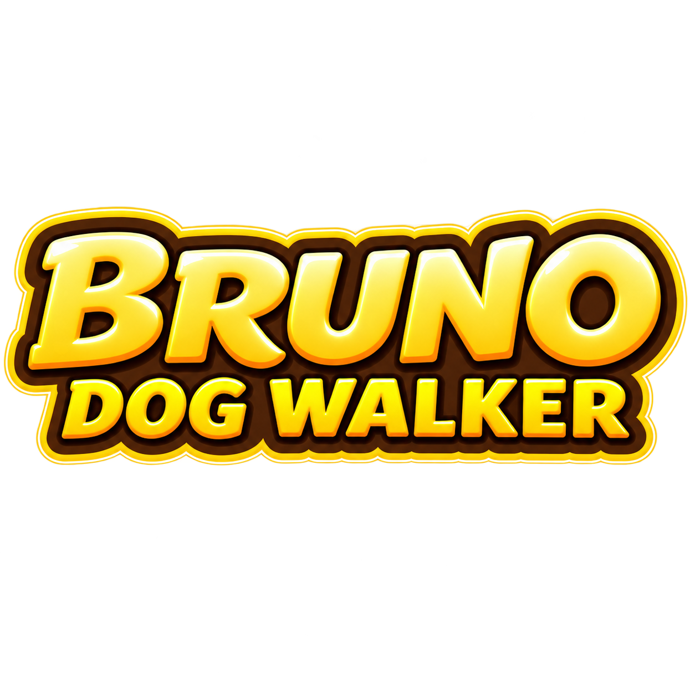
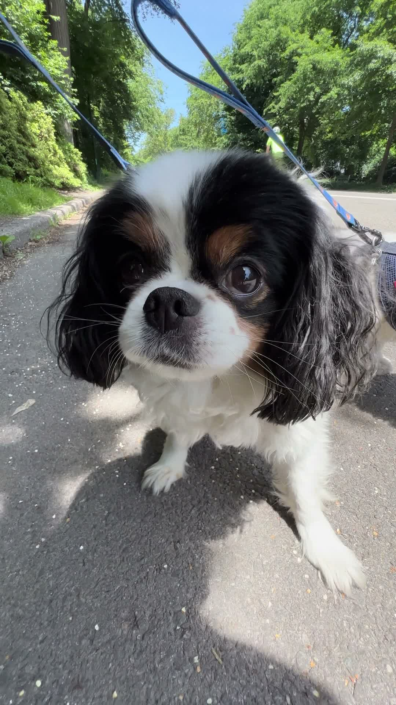
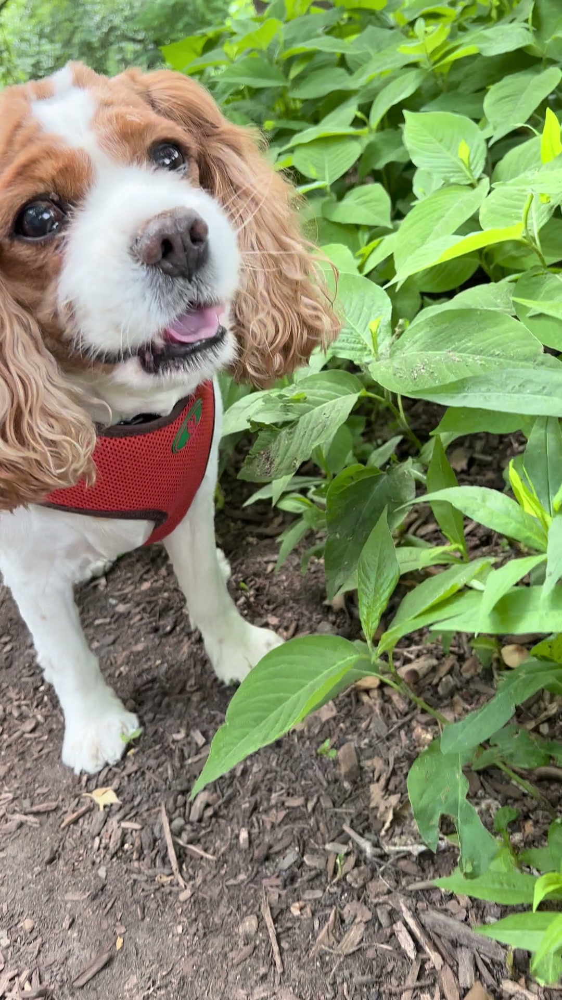
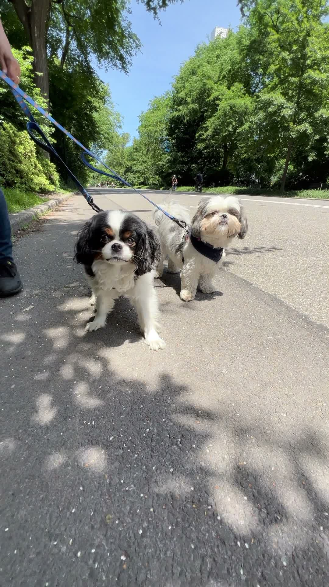
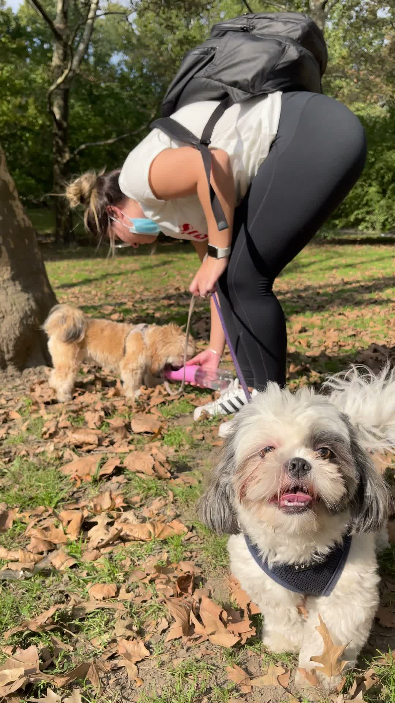
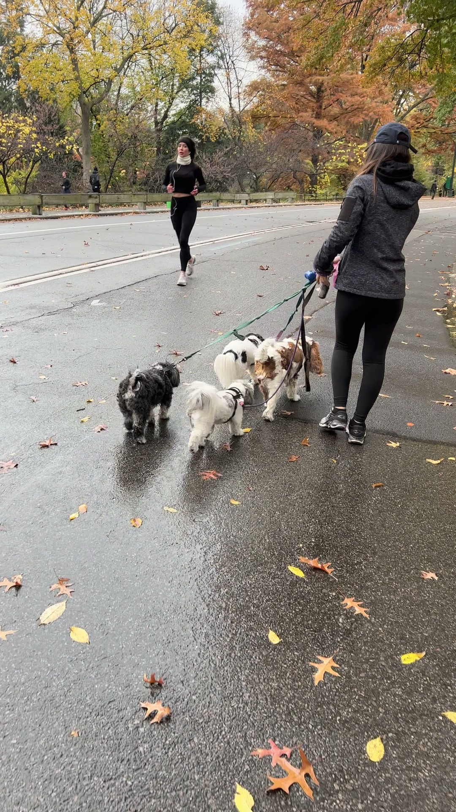
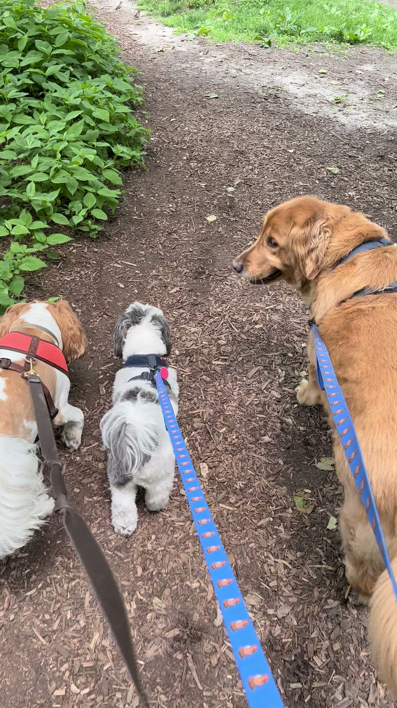
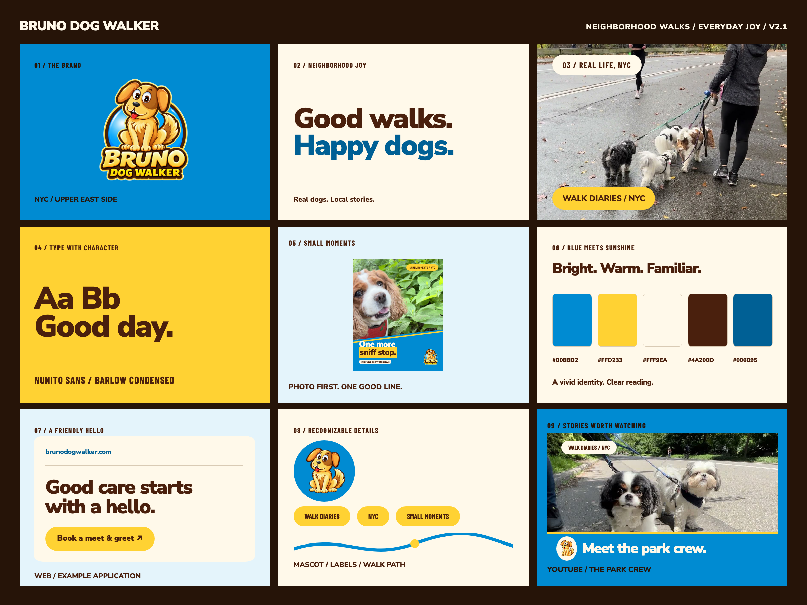

NYC spirit. Dog-first design.A alegria dos
A alegria dos
passeios
no bairro.
Cães reais, histórias locais e uma identidade que acompanha o ritmo de NYC.
Curvas de percurso. Amarelo de energia. Fotografias de companhia.
MORE THAN A WALK.
Alegre e acolhedoraUrbana e próximaClara e consistente
Baseada nos logos, posts, perfil e site enviados.01Paleta
O azul encontra o sol.
Azul para reconhecimento, amarelo para energia e creme para respirar. O marrom vem do mascote e dá calor à leitura. Os valores abaixo são a normalização proposta das referências.
Walk Blue
Fundos e expressão
Sunshine
Chamadas e destaques
Warm Cream
Base e respiro
Cocoa
Texto e assinatura
Deep Walk
Links e leitura
Creme sobre azul vivo: apenas títulos grandes. Amarelo sobre azul vivo não atinge o contraste mínimo; use Deep Walk. Para textos pequenos em azul, use também Deep Walk. O azul vivo volta aos fundos de marca; destaques amarelos têm sua própria base e texto marrom.
Base clara: creme predominante, azul de apoio, amarelo pontual.Base expressiva: azul predominante, creme e amarelo nos títulos.
02Marca & mascote
Uma família. Quatro usos.
Os arquivos originais permanecem intactos. A função de cada versão reduz improvisos e mantém a marca reconhecível em diferentes tamanhos.


Área livre: 15% da largura visível em cada lado.Preservar: proporção, cores, expressão e contornos.Avatar: mascote central em círculo azul, sem texto pequeno.
Há uma versão anterior do mascote no perfil enviado. Nesta proposta, os quatro PNGs fornecidos são a família de referência; a captura do perfil orienta o contexto e os destaques.
03Tipografia
Forte no título.
Amigável na leitura.
Nunito Sans combina títulos de peso 900 com uma leitura cotidiana em 400–600. Barlow Condensed 700 aparece somente nas pequenas etiquetas editoriais. Fontes propostas, sem atribuição à arte original.
Nunito Sans / 900
Good walks.
Happy dogs.
Happy dogs.
Every walk has a story. Familiar streets, curious noses and a little more joy along the way.
WALK DIARIES / NYC
Barlow Condensed / 700 · etiquetas, séries e capítulos
Uma escala simples.
Display80 px · 900 · 1.0
Título56 / 40 / 24 px · 900 · 1.05–1.2
Introdução20 px · 600 · 1.5
Texto16 px · 400 · 1.6
Apoio14 px · 600 · 1.4
A escala acima é para interfaces. Peças de 1080 px e vídeo têm tamanhos próprios no guia de produção. Mantenha títulos em até três linhas e destaque uma única ideia.
04Gramática visual
Curvas, luz e movimento.
As curvas representam o percurso do passeio. A etiqueta organiza as histórias do bairro. O amarelo marca energia e descoberta. Cada elemento tem uma função na composição.
Onda orgânicaUma curva dominante por composição. Faixa amarela opcional para reforçar a divisão.
WALK DIARIES / NYC
Etiqueta editorialFundo amarelo, texto marrom e cantos arredondados. Identifica uma série.
Acento de energiaUm brilho ou até três traços de movimento. Sempre longe do rosto do cão.
05Instagram & YouTube
Seis layouts.
Um mesmo bairro.
Retratos, companhia e pequenos momentos. Cada composição tem uma função: contar uma história, mostrar um passeio ou convidar a assistir. Explore as bases e teste as fotos reais do projeto.
Prévia de exemplos · alterações temporárias nesta página
01 / Frase editorial 1080 × 1350

WALK DIARIES / NYCYou said walk.
You said walk.
I heard adventure.
UPPER EAST SIDE@brunodogwalkernyc

02 / Curva diagonal 1080 × 1350

SMALL MOMENTS / NYCOne more
sniff stop.
@brunodogwalkernyc

03 / Diário fotográfico 1080 × 1350
WALK DIARIES / NYC01 / TOGETHER

Better
together.
@brunodogwalkernyc

04 / Capa vertical 1080 × 1920

WALK DIARIES / NYCSmall paws.
Small paws.
Big city.

05 / Capa editorial 1280 × 720
DOG WALKING / NYCLittle walks.
Little walks.
Big joy.

06 / Foto em destaque 1280 × 720
WALK DIARIES / NYC
Meet the park crew.

Vídeo em três momentos
A capa apresenta.
A legenda acompanha.
Durante o vídeo, os elementos ficam discretos para dar espaço ao passeio. O encerramento reúne a marca e uma chamada. Estes são quadros de referência, sem edição dos vídeos existentes.
Durante a fala

Every walk has
its own rhythm.
its own rhythm.

Identificação pontual

Dog name — nome de demonstração

Encerramento
WALK DIARIES / NYCSee you on
@brunodogwalkernyc
See you on
the next walk.
@brunodogwalkernyc
As margens são convenções internas de composição. Confira controles e recortes na prévia da plataforma. A seleção de fotos aproxima o foco, mas não substitui a revisão do rosto e do texto no enquadramento final.
Pelo escuroOlhos visíveis; elementos claros separados da fotografia.
Pelo claroRosto preservado; caixas com base sólida e posição própria.
Retrato próximoTexto fora do rosto; corte ajustado ao conteúdo da foto.
Grupo e via urbanaContexto da caminhada e todos os cães relevantes no enquadramento.
06Componentes web
Personalidade que funciona.
A identidade do site ganha componentes claros: chamada amarela, links em azul escuro e campos com rótulos visíveis. Os controles abaixo são demonstrações locais.
Ações & estados
Uma próxima etapa clara.
Padrão
Ao passar o cursor
Ao pressionar
Indisponível
Foco visível ao navegar com Tab. Área de toque: 48 px. Uma ação principal por bloco.
Sem envio ou armazenamento de dados.
Upper East Side / Manhattan
Good care starts with a hello.
Um exemplo de faixa de chamada, com texto breve e uma única ação.
07Regras de produção
Consistência em cada detalhe.
Um conjunto pequeno de decisões facilita a criação de peças novas. As medidas são bases editoriais propostas e devem ser verificadas com o material real.
Layout & fotografia
EspaçamentoBase de 4 px. Use 8, 16, 24, 32, 48 e 64 px para construir ritmo.
Cantos8 px em campos; 16 px em cards; 24 px em blocos; cápsula em chamadas.
FotoLuz natural, olhos legíveis e comportamento real. Evite curvas, texto ou adesivos sobre focinho e olhos.
HierarquiaFoto → frase → assinatura. Uma ideia forte e uma chamada por peça.
Vídeo & movimento
LegendasNunito Sans 800. Base de 52–64 px em 1080 × 1920, até duas linhas, fundo marrom.
NomeFaixa creme com acento amarelo; aparição sugerida de 2,5–4 segundos.
TransiçõesEntrada suave em 160–240 ms. Movimento discreto, sem distrações sobre o cão.
EncerramentoLogo completo, uma chamada e tempo de leitura. Voz, trilha e áudio não fazem parte da revisão visual.
Voz da marca
“You said walk.
I heard adventure.”
Próxima, divertida e confiante. Em redes sociais, humor curto na perspectiva do cão. Em serviços, frases claras sobre o que é oferecido. Comunicação pública em inglês; diretrizes internas em português. Evite promessas não comprovadas ou humor que diminua o cuidado.

O universo da marca em um painel 3×3Abrir em tamanho maior ↗08Arquivos do sistema
Pronto para continuar criando.
Guia visual, diretrizes e tokens reunidos no projeto. A direção editorial está aprovada. A v2.1 reúne aplicações refinadas para revisão visual e uso na criação de peças futuras.